Designerzy używający asymetrii chcą podkreślić wyjątkowość witryny. Modne strony internetowe mają wywoływać wrażenie ruchu oraz zapewniać większą różnorodność wizualną. Niestandardowe ułożenie elementów sprawia wrażenie wysokiej jakości oraz uczucia premium.
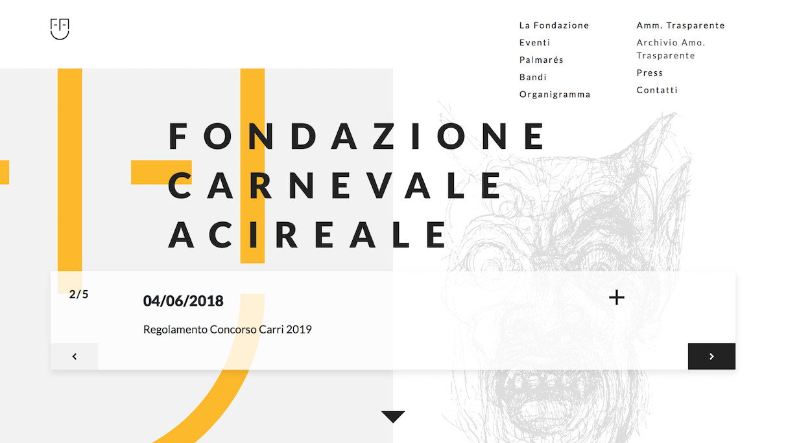
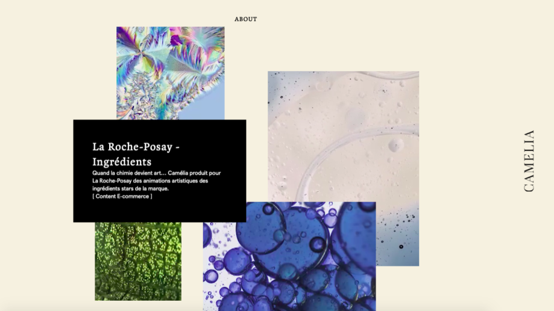
Ciemny motyw szablonu
Dużo marek na skalę światową odchodzi od jasnych na rzecz ciemnych motywów. Dlaczego? Takie rozwiązanie sprawia, że strona wygląda bardziej elegancko, wszystkie elementy są doskonale widoczne. Ciemne barwy strony mniej męczą wzrok.
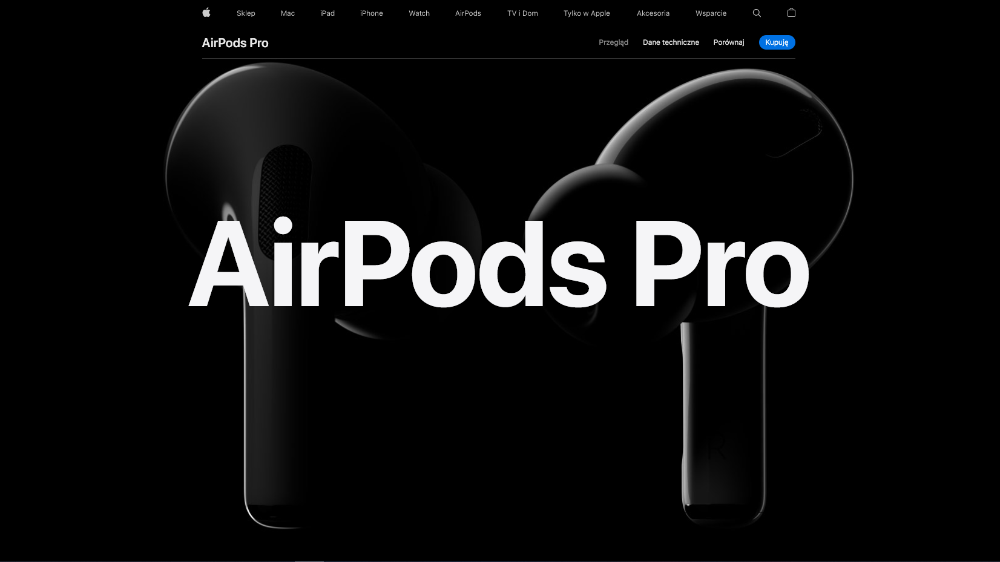
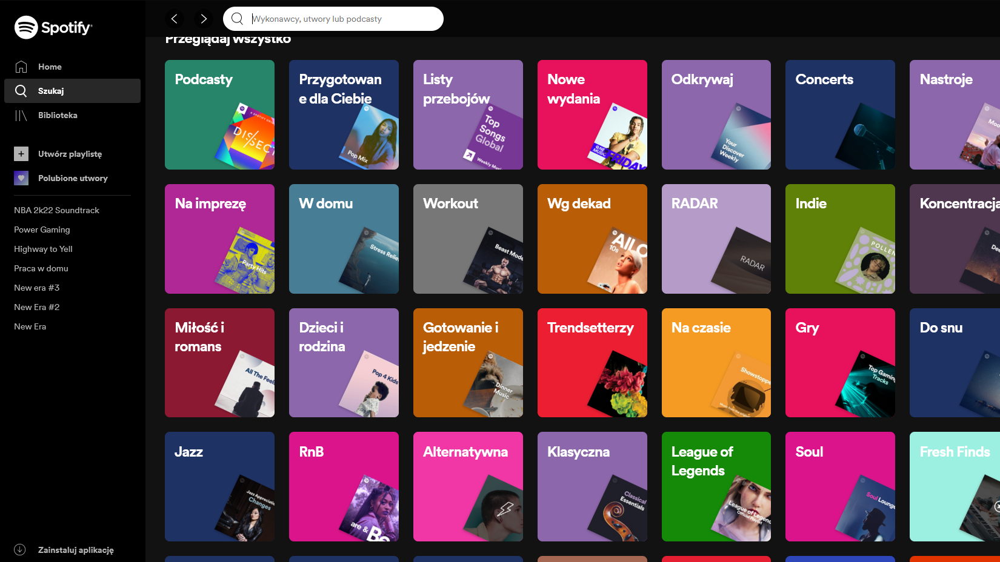
Odważne zestawienie kolorów
W designie ważna jest kreatywność, dlatego w 2021 popularne są odważne zestawienia kolorów. Od razu przyciągają wzrok swą wyjątkowością. W przypadku niektórych marek intensywne kolory oraz neonowe odcienie się sprawdzają.
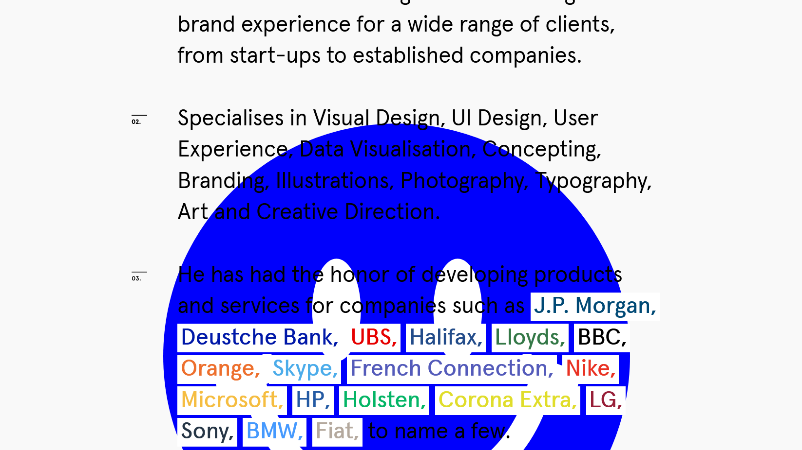
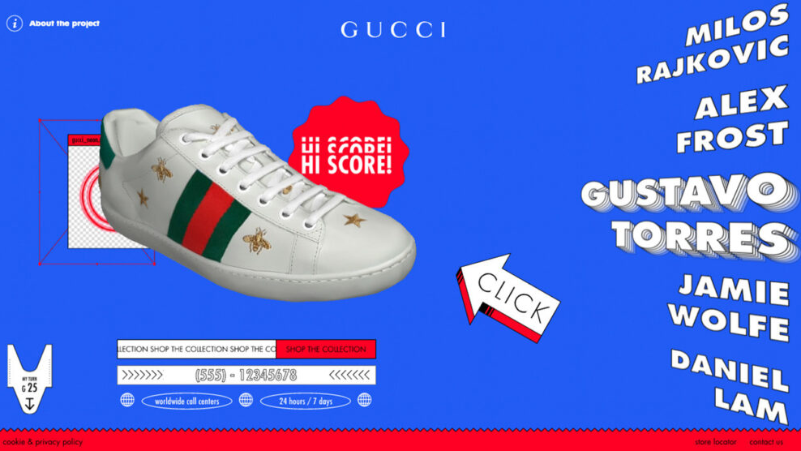
Uniwersalny minimalizm
Doskonale znany minimalizm może wydawać się oczywistym wyborem. Większości z nas kojarzy się z białym kolorem, natomiast w 2021 roku można spotkać inne koloru tła np. beżowy, szary, a nawet czarny.
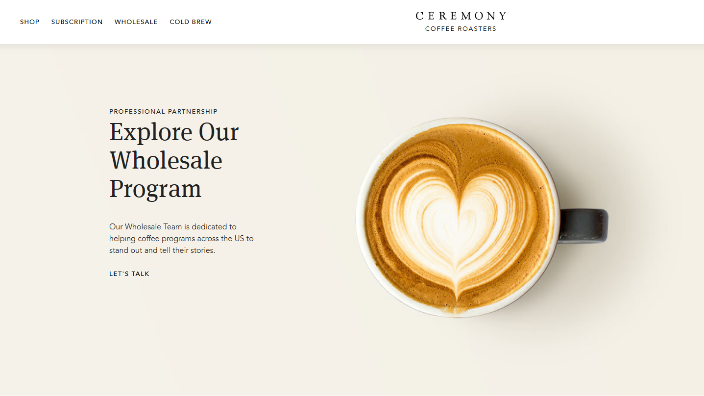
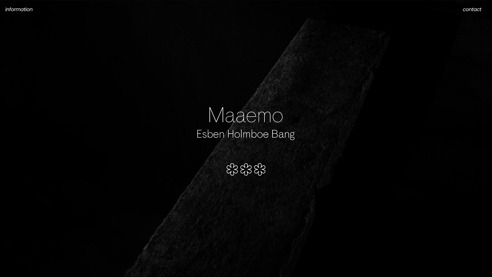
Horyzontalne przewijanie
Horyzontalne przewijanie może wydawać się dziwne, ale coraz więcej designerów eksperymentuje z takim typem scrollowania. Ci, którzy robią to najlepiej obracają szablon nie ze względu na odmiennośc od innych witryn, ale jako praktyczny sposób na stopniowe ujawnianie drugorzędnych informacji, jak w galerii obrazów.
Projektanci, którzy z powodzeniem stosują przewijanie poziome, powinni mieć na uwadze następujące kwestie:
nie zmuszać użytkowników do poruszania się po treściach poziomych: umożliwić alternatywne sposoby nawigacji tj. przyciski strzałek z etykietami
używać wizualnych wskazówek, aby wskazać, gdzie treść używa przewijania w poziomie
zastanowić się, jakie treści skorzystałyby na wyświetlaniu w trybie przewijania w poziomie - galeria zdjęć jest jednym z nich
Galeria zdjęć
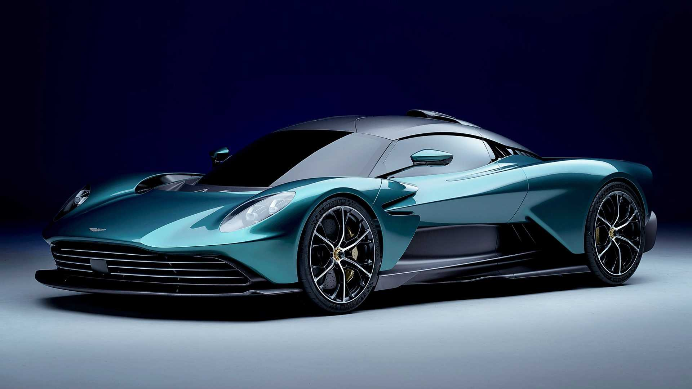
Aston Martin ValhallaAston Martin VantageAston Martin Vanquish
Przewiń niżej...
Elementy 3D
Trend projektowania 3D nie jest całkiem nowy, ale robi się coraz fajniejszy i fajniejszy. Ten trend w projektowaniu, w pełni wykorzystuje nowe osiągnięcia technologiczne i możliwości oprogramowania.
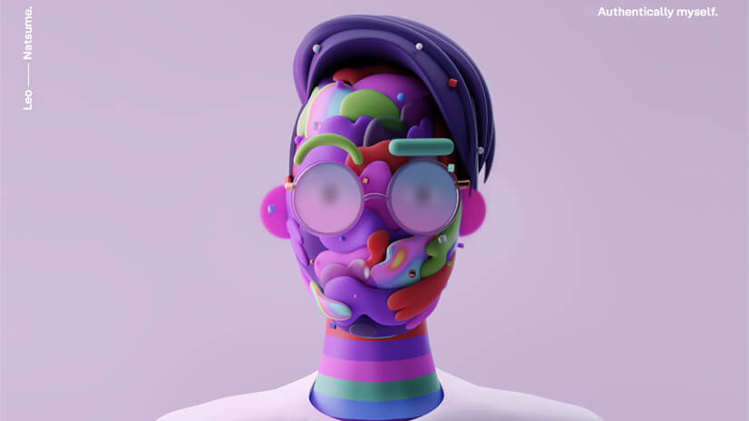
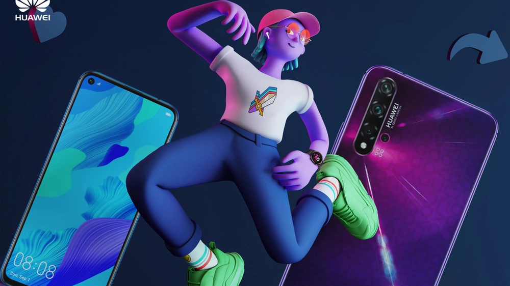
Pogrubiona czcionka
Ciekawym trendem w projektowaniu stron WWW są pogrubione czcionki. Nie da się ukryć, że te czcionki chcą być widziane i nie można ich nie zobaczyć. Pokrywają większość ekranu, często występują z animacjami, co sprawia, że bardzo przyciągają uwagę.